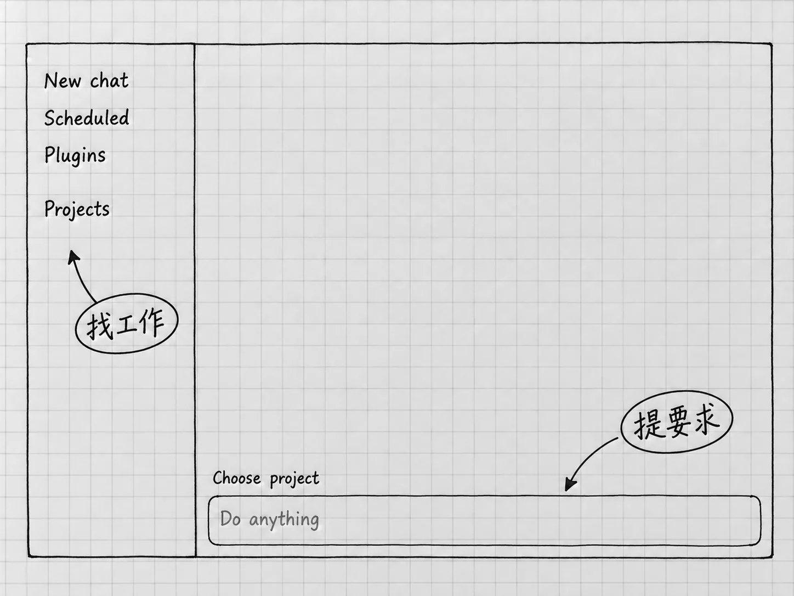
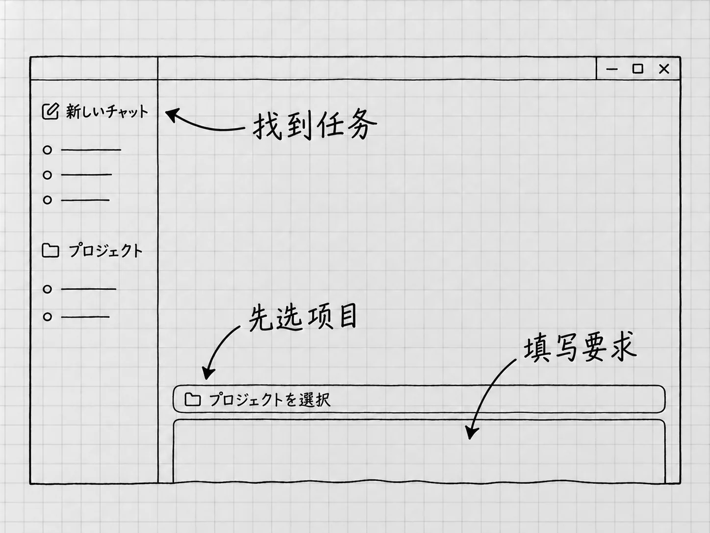
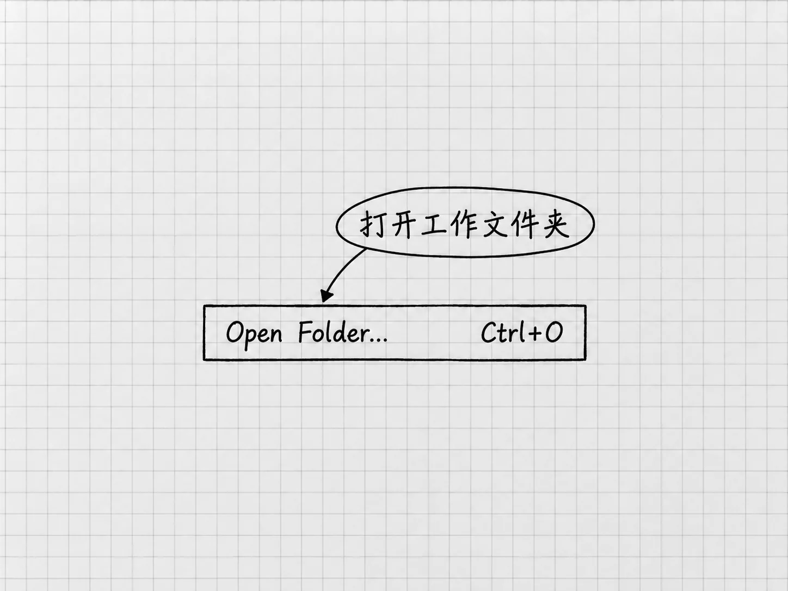
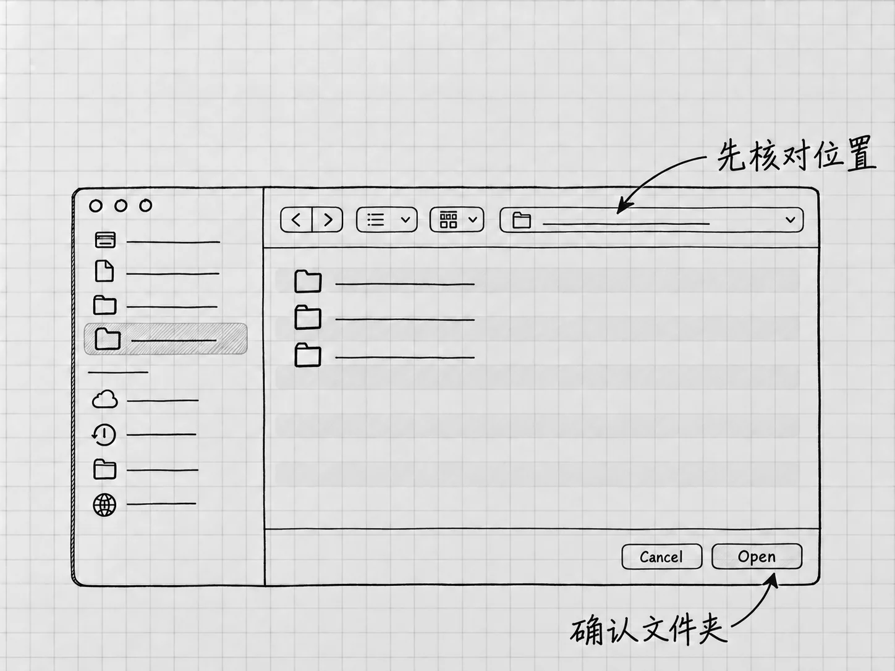
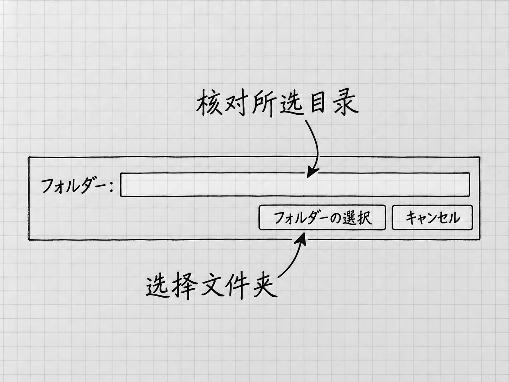
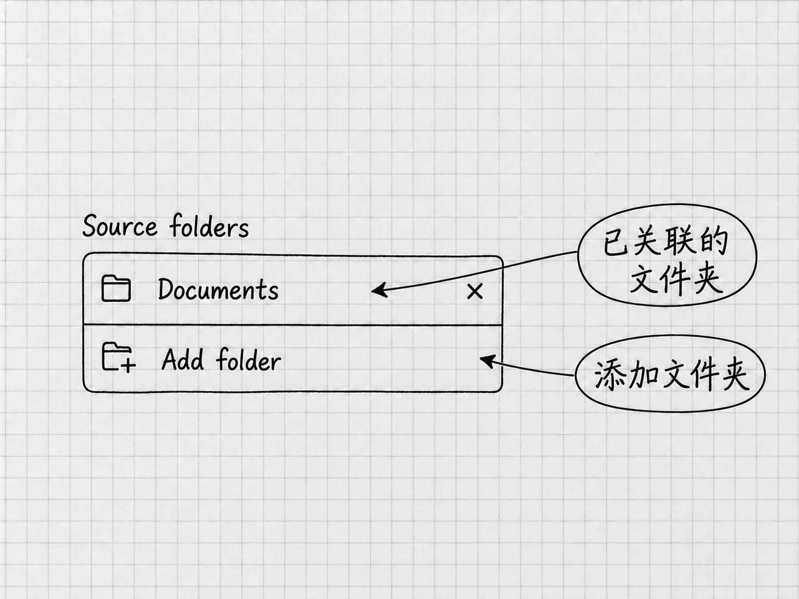

第3章
看懂第一屏，并发出第一条消息
进入Codex后，先认三个地方：侧栏用来找到工作，输入框用来提出要求，消息区域用来看处理过程和回复。本章先把工作文件夹打开，发一条短消息走完一轮交流，再回头认识输入框周围那些选项。
随着任务变化，界面还会出现文件、预览和其他工作面板。窗口宽度、应用版本和当前视图都会影响布局，寻找时以名称和用途为准。
侧栏：开始一件事，也找回做过的事
侧栏的 New chat（新聊天）用来开始一个新任务。默认快捷键是Windows的 Ctrl+N、Mac的 ⌘N。先认识这个入口，稍后选好文件夹再用它。

图：先认侧栏、项目选择与输入框。此图来自尚未选择项目的新任务首屏，只画本章此刻需要的区域；型号、权限和案例内容省略。

图：Windows日文起始画面的主要区域：侧栏找任务，输入框上方选项目，下方写要求。图中省略了与本章无关的推荐卡片。
侧栏会组织项目和已有任务。任务是围绕一件事的连续交流；项目把相关工作放在一起，还可以关联电脑上的文件夹。比如，「我的待办」可以成为一个项目，其中有整理清单、更新清单等任务。单独问一个问题，可以先不选项目。
要不要新开任务，看是不是在继续同一件事。刚生成的清单漏了一项，就在原任务里补充；转去研究一个无关话题，再开新任务。这样回到侧栏时，每个任务里的要求和进展都容易看清。项目的整理、查找和归档在第12章介绍。
侧栏收起来时，可以用默认快捷键Windows的 Ctrl+B、Mac的 ⌘B切换显示。若按键与你的设置不同，到上一章介绍的Keyboard Shortcuts页面核对。
打开项目文件夹：告诉Codex在哪里工作
要让Codex读取电脑里的材料、把成果保存在指定位置，得先告诉它这次围绕哪个文件夹工作。
电脑上的文件夹放文件，Codex里的项目组织相关任务；把文件夹连接到项目以后，任务才有了明确的本地工作位置。 给项目取名叫「我的待办」，只是起了名字，电脑上的同名文件夹还要另外连接。普通的文档文件夹就可以用。
先选一份范围明确的材料
这里直接使用下一章也要用到的配套材料。取得「我的待办-起始材料.zip」并解压，把其中的「我的待办」放在容易找到的位置。它应当直接包含「材料」文件夹，里面是「随手记.txt」和「补充说明.txt」。这些是本书自编的备忘，不含真实个人信息。
我们要打开的是外层「我的待办」。稍后Codex既要读里面的「材料」，又要在旁边建立「结果」，选这一层，两处就在同一个工作位置里。压缩包和单个文件都不是要选的对象；整个桌面或个人文件目录范围又太大。
以后处理自己的工作，也可以照这个思路：把这件事要用的材料放进一个专门文件夹，从这份文件夹开始。
在Codex中打开它
在Codex入口中使用 Open folder（打开文件夹），Windows默认快捷键是 Ctrl+O，Mac是 ⌘O，然后在文件夹选择窗口里选中刚才的「我的待办」。

图：Windows来源图中Open Folder菜单的一行。右侧Ctrl+O是该图显示的快捷键；Mac默认用⌘O。
找不到这个动作时，可以打开应用的命令菜单：Windows用 Ctrl+Shift+P，Mac用 ⌘⇧P，搜索 Open folder。命令菜单是按名称寻找应用操作的地方，和聊天输入框是两处；把「Open folder」当作消息发出去，起不到打开文件夹的作用。

图：Mac文件夹选择窗口：先核对当前位置，选中本书的「我的待办」文件夹，再用Open确认。图中省略来源的文件名和路径。

图：Windows日文选择器的下部：先核对「フォルダー」一栏，再按「フォルダーの選択」确认。中文系统的对应动作是选择文件夹。
确认连接的是电脑上的哪一处
同名文件夹可能不止一个。打开该项目的菜单，选择 Edit project（编辑项目），查看关联的文件夹。
文件夹的位置会显示成一长串文字，例如Windows的 C:\Users\demo\Desktop\我的待办，或Mac的 /Users/demo/Desktop/我的待办。这叫路径，可以理解为文件夹的地址：从外层位置一层层找到它。demo是示例用户名，你的电脑上会是自己的名字。核对时把整串看完，确认它指向刚才解压材料的那一处，只看最后的「我的待办」容易认错。
如果发现选错了，先别发送修改文件的要求。重新用Open folder打开正确的目录，核对路径以后再继续。
已有项目的另一种入口
刚才已经用Open folder连接了正确文件夹，可以直接看下一小节。如果你原来建过项目，但还没有连接本地目录，可以从项目菜单进入Edit project，再选择 Add folder（添加文件夹），选中要使用的目录。

图：Mac创建项目界面的文件夹列表局部：已有目录列在上方，Add folder用于添加。Documents是来源图片中的示例名称；使用时选择自己的材料文件夹。
项目可以关联多个文件夹。若已有多个目录，指向其中一个并选择 Make primary，可以把它设为主要工作文件夹，新的任务从这里开始。已经打开的旧任务仍留在原来的位置，所以设置之后要从这个项目新开任务。本例只需要「我的待办」这一处。
在这个项目里开始任务
文件夹位置确认后，在对应项目里用 New chat 开始任务，核对当前选中的项目是「我的待办」，并选择 Local（本地）运行位置。Local表示围绕电脑上的当前项目目录工作；下一章要求保存清单时，就到这份目录里找结果。模型的处理仍然通过网络完成，Local说的只是文件在哪里。
发送前，打开输入框下方的权限控件，选择 Ask for approval（请求批准），再确认当前任务显示的是这一项。它允许在工作区范围内进行常规操作，需要额外访问时再请求批准。打开文件夹本身不等于选好了权限，所以这一步要单独做。模型先保持当前可用的选择。
若Windows此时提示首次设置沙箱，按第2章的本地设置说明处理，然后回到这个任务，核对项目、Local与权限，再继续。
工作位置和任务都有了。我们先不动文件夹里的材料，发一条只回复文字的短消息，认识输入和回复；下一章再正式读取两份备忘。
输入框：先说一件很小的事
输入框是日常使用最多的地方。直接写一句话或几段话，就可以提出要求，前面不需要加任何命令。发给AI的要求通常叫提示词，本书把它当成正常的工作交流来写。
这次整理下面三条提醒：
请把下面的提醒整理成简短清单，重复的事情合并，不补充我没有写的内容。直接在回复里列出即可，不需要创建文件。
带上水杯。 到图书馆还书。 出门时记得拿水杯。
这段要求交代了材料、整理方式和结果放在哪里。只回复文字，可以让我们专心看清一条消息怎样发出、怎样得到结果。
把这段要求放进输入框，用发送按钮开始。确认要求已经出现在消息区域，再看它是在处理、等待你回应，还是已经给出本轮结果。
消息区域：看出它现在需要你做什么
这条请求很短，可能很快给出答案。任务复杂一些时，消息区域还会显示读取材料、使用工具和处理进展。这些进展说的是它走到了哪一步，最终回复要等这一轮结束。
读这些内容，先看它现在处于什么状态：
| 你看到的情况 | 现在怎样处理 |
|---|---|
| 正在读材料或制作成果 | 等待当前处理，并留意对象是否正确 |
| 询问一个缺失条件 | 在原任务里回答；没有决定的事，照实说明尚未确定 |
| 请求批准某项操作 | 看清要操作什么、为什么需要，再决定是否允许 |
| 报告失败 | 先看失败发生在哪一步；它原本打算接着做的事都还没有做 |
| 给出本轮结果 | 对照要求检查，需要修改就继续反馈 |
你可能看到某个工具名称或一段命令，那是它处理工作的过程，你不用照着执行。先看它处理的文件或对象是否与要求相符，以及结果有没有实际产生；第4章会用文件把这件事讲具体。
这次只是整理几行文字，可以等一轮结束再反馈。以后涉及文件时，如果发现材料选错了，就要及时纠正方向。先打开 Settings → General → Follow-up behavior，选择 Steer，回到原任务发送「先停止后续操作，说明已完成了什么，等我确认再继续」。Steer会把消息交给当前运行处理；如果选择的是Queue，消息会排到下一轮。
发出要求后，要看它是否已经回应并停止后续工作。正在执行的工具可能还需要结束，文字要求并不保证立刻中断。先等状态明确，再去改同一份文件。第8章会接着讲队列、停止后的检查和失败后的继续。补充消息的处理方式
等这一轮结束，再读实际回复。结果的意思应当是两件事：带水杯、到图书馆还书。措辞和顺序可以不同，但水杯只能出现一次，还书也要在。
如果它顺手加上「带雨伞」，看起来是好意，却超出了材料。我们的要求是整理现有提醒，它自己想到的建议要和原来的内容分开。
核对完这两件事，再在同一个任务里发送：
请把「到图书馆还书」放在第一项，其余内容不变。
等回复结束，看它是否只调整了顺序。你没有重发全部材料，仍然可以围绕刚才的结果继续交流。最基本的使用过程就是这样：提出要求，看结果，再把具体差异说清楚。
给材料：粘贴、附件与文件引用
刚才的三条提醒直接写在消息里。材料变多以后，可以用附件入口加入文件或图片。比如，解释一张页面截图，就把截图提供给当前任务，再说希望它看哪里；比较两份说明，就明确指出要比较的是哪两份。
提供一个附件，不等于开放了电脑上所有文件。 反过来，只在消息里写「看看桌面上的说明」，Codex也未必找得到它。本章打开「我的待办」，就是为下一章直接读取材料和保存文件准备工作位置。
本地任务中，输入 @ 可以选择文件引用。文件较多、名称相近时，它能让要求指向具体的一份。选中以后，还要说明想让它做什么。怎样挑选材料，第9章再讲。
不想打字，也可以先说出来
要求较长时，可以使用听写。它把你说的话转成输入框里的文字，你先检查，再发送。官方默认快捷键在Windows和Mac上都是 Control+Shift+D，Mac上按的也是Control键。使用前要允许必要的麦克风访问，并以当前应用的可用入口为准。
听写适合先把大意说出来，再补文件名、数字或限制。说完以后看一遍转出来的文字，例如「还书」有没有被识别成别的词，改好再发送。
另有一种实时语音对话，让你用声音连续交流。实时语音及在已有Codex任务中的相关能力受开放进度和账号条件影响，第8章讲运行中的交流时再介绍。
输入框附近的设置，各管一件什么事
做完刚才的小任务，再看模型、权限和运行位置，就有具体参照了。它们挨在一起，管的事情各不相同。
| 设置 | 它影响什么 | 这次小任务怎样选 |
|---|---|---|
| 模型与Effort | 由哪个模型处理，以及投入多少推理 | 先用当前可用选择 |
| Speed或Fast | 以怎样的速度处理，以及相应消耗 | 保持当前默认设置 |
| 项目与运行位置 | 围绕哪份工作，在哪里操作文件 | 已打开「我的待办」并选择Local |
| 权限 | 允许做哪些操作，什么时候需要批准 | 已选Ask for approval；新任务要再核对 |
模型控件位于输入框下方。当前官方界面提供 Power 和 Advanced 等选择方式：Power把模型与推理投入组合成较容易选用的预设，Advanced让你分别选择模型、Effort等选项。列表里有什么，要看账号、版本和开放进度。
Effort表示模型为解决问题投入的推理程度，可以先理解为「愿意花多少思考来处理这件事」。更高的投入可能增加等待和用量。对刚才的三条提醒来说，把「合并重复、不补充内容」说清楚，比调高档位有用。
Fast处理的是速度。它与Effort各管一件事，开启后可能增加用量。初次使用时，几项设置一次只动一项，才看得出是哪一项改变了结果。模型、Effort和Fast怎样选，第6章用不同难度的任务来讲。
运行位置里除了Local，还有Worktree和Cloud两种方式，第一次文件任务用不到。
权限这一项，前面选的是Ask for approval。选了它，并不意味着每读一份文件、每改一行字都来问一次；需要额外访问时，它才停下来征得许可。各种权限模式的区别在第7章。
这里顺便分清两个容易看混的词。如果看到 Approve for me（帮我批准），它与自动审核操作请求有关，是否显示和可用受设置与组织条件影响。批注发生在查看成果时，例如针对文档的一段话指出「这里缺少日期」，第10章结合预览介绍。批准管的是操作能否执行，批注说的是成果要怎样改。
还有一些入口，先知道到哪里找
输入框中键入 /，可以打开当前可用的命令菜单，再输入文字筛选。后面会用它查询状态、先讨论方案。输入 $ 则可以选择当前可用的 Skill，它把某类任务的做法或指引整理起来供使用，第20章详细说明。
普通请求直接说清要求就够了，这些符号是需要时才用的入口。菜单里显示的是当前环境可用的选项，以你看到的为准。
前面寻找Open folder用过应用的命令菜单。它帮你找应用操作，输入框里的斜杠菜单则用于当前聊天中的命令，两张列表有交集，内容并不相同。
另外几处入口也常会遇到：
| 名称 | 用来做什么 |
|---|---|
| Settings | 调整快捷键、通知、外观和部分任务行为 |
| Plugins | 浏览和安装扩展能力；某些插件还需要连接外部账号或服务 |
| Scheduled | 查看和管理定时任务，让工作按约定时间启动 |
插件与定时任务留到后面实际使用时再设置。定时任务有自己的运行条件，例如本地任务需要电脑开着、应用运行，并能访问相应项目，第24章会讲。
想知道用了多少，可以查看官方用量页面；当前命令菜单提供 /status 时，也可以用它查看任务状态及相关限制信息。这些数字怎样读，第5章解释。
成果面板：边看结果，边回到任务
刚才的清单在消息里，因为我们要求只回复文字。以后生成文档、表格、演示文稿或PDF，桌面应用可以在聊天旁边显示支持的文件预览；是否自动打开，取决于格式与相关设置。
处理本地项目时，还可能出现文件列表、修改查看或底部面板，它们随当时的工作出现。底部的终端面板用于显示或执行电脑命令，整理文字时用不到；默认 Ctrl+J／⌘J 可以切换底部面板。界面显得拥挤时，收起暂时不用的区域，保留消息和当前成果即可。
预览帮助你阅读，文件本身才是可以继续保留和使用的成果。没有自动预览时，按保存位置在电脑上打开文件。下一章回到已经打开的「我的待办」，让Codex读取两份备忘，生成一份真正保存到文件夹里的清单，打开检查，再修改一项。